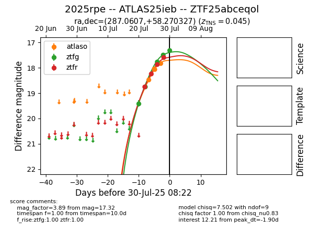

Target 2025rpe at 2025-07-30 08:22, see:
FINK: fink-portal.org/2025rpe
Lasair: lasair-ztf.lsst.ac.uk/objects/2025rpe
ALeRCE: alerce.online/object/2025rpe
TNS: wis-tns.org/object/2025rpe
YSE: ziggy.ucolick.org/yse/transient_detail/2025rpe
alt names
ZTF25abceqol (ztf,fink)
2025rpe (tns,yse)
ATLAS25ieb (atlas)
coordinates:
equatorial (ra, dec) = (287.0607,+58.27033)
galactic (l, b) = (88.8270,+20.70415)
photometry
last atlaso=17.82, ztfg=17.32, ztfr=17.58
4 atlaso, 5 ztfg, 4 ztfr detections
